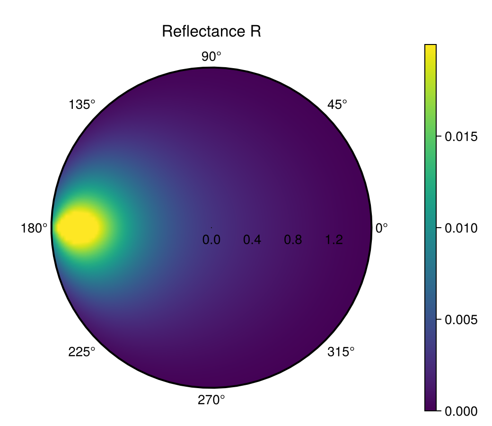
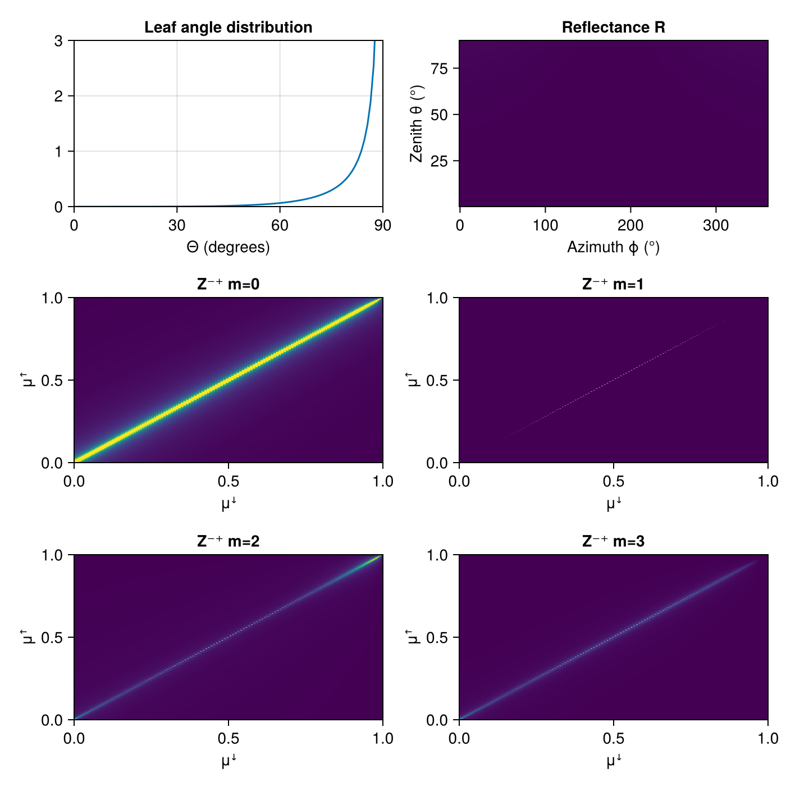

Specular Canopy Scattering
Using packages:
using CairoMakie, Distributions
using CanopyOpticsCreate a specular model with refractive index and "roughness" κ
specularMod = CanopyOptics.SpecularCanopyScattering(nᵣ=1.5, κ=0.2)SpecularCanopyScattering{Float64}(1.5, 0.2, 20)Use standard planophile leaf distribution:
LD = CanopyOptics.planophile_leaves2()CanopyOptics.LeafDistribution{Float64}(Beta{Float64}(α=1.0, β=2.768), 0.6366197723675814)Create some discretized angles: Azimuth (in radians)
ϕ = range(0.0, 2π, length=200);Polar angle as cos(Θ)
μ, w = CanopyOptics.gauleg(180, 0.0, 1.0);Create directional vectors:
dirs = [CanopyOptics.dirVector_μ(a, b) for a in μ, b in ϕ];Compute specular reflectance for a fixed incoming direction:
R = CanopyOptics.compute_reflection.([specularMod], [dirs[50,1]], dirs, [LD]);Polar plot of reflectance using PolarAxis
Zenith angle θ is the radial axis (0 = nadir, π/2 = horizon). acos.(μ) is descending (μ ascending); sort to ascending and reverse R rows to match. PolarAxis surface! expects matrix shape (nangle × nradius).
θ = sort(acos.(μ)) # ascending, 0 → π/2
R_polar = reverse(R, dims=1)' # (nϕ=200 × nθ=180)
fig = Figure(size=(520, 450))
ax = PolarAxis(fig[1, 1], title="Reflectance R")
hm = surface!(ax, collect(ϕ), θ, zeros(size(R_polar)),
color=R_polar, colorrange=(0, 0.02), shading=NoShading)
rlims!(ax, 0, π/2)
Colorbar(fig[1, 2], hm)
fig
Animation over different Beta leaf distributions
steps = 0.1:0.2:5
α_vals = [collect(steps); 5 * ones(length(steps))]
β_vals = [5 * ones(length(steps)); reverse(collect(steps))]
x = collect(0:0.01:1)101-element Vector{Float64}:
0.0
0.01
0.02
0.03
0.04
0.05
0.06
0.07
0.08
0.09
⋮
0.92
0.93
0.94
0.95
0.96
0.97
0.98
0.99
1.0Observables: updating LD_obs propagates to all derived plots reactively. R has shape (nμ=180, nϕ=200); for heatmap(ϕ, θ, z) Makie needs z of shape (nϕ, nθ).
LD_obs = Observable(LD)
pdf_obs = @lift pdf.($LD_obs.LD, x)
R_obs = @lift reverse(
CanopyOptics.compute_reflection.([specularMod], [dirs[120,1]], dirs, [$LD_obs]),
dims=1)'Observable([0.0051256351845153075 0.005084114790658285 … 0.0007964514475847218 0.0007961275579474112; 0.005125650874728787 0.0050841496661348665 … 0.0007965842388572395 0.0007962603224514294; … ; 0.005125650874728787 0.0050841496661348665 … 0.0007965842388572395 0.0007962603224514294; 0.0051256351845153075 0.005084114790658285 … 0.0007964514475847218 0.0007961275579474112])
Use map to properly capture m in each iteration (avoids closure-in-loop)
Zpm_obs = map(0:3) do m
@lift CanopyOptics.compute_Z_matrices(specularMod, μ, $LD_obs, m)[2]
end
fig2 = Figure(size=(700, 700))
ax0 = Axis(fig2[1,1], title="Leaf angle distribution",
xlabel="Θ (degrees)", limits=(0, 90, 0, 3))
ax1 = Axis(fig2[1,2], title="Reflectance R",
xlabel="Azimuth ϕ (°)", ylabel="Zenith θ (°)")
ax_Z = [Axis(fig2[i+1, j], title="Z⁻⁺ m=$(2(i-1)+(j-1))",
xlabel="μꜜ", ylabel="μꜛ") for i in 1:2, j in 1:2]
lines!(ax0, rad2deg.(π * x / 2), pdf_obs)
heatmap!(ax1, rad2deg.(collect(ϕ)), rad2deg.(θ), R_obs, colorrange=(0, 0.02))
for (k, ax) in enumerate(ax_Z)
heatmap!(ax, μ, μ, Zpm_obs[k], colorrange=(0, 0.3))
end
record(fig2, "anim_fps10.gif", eachindex(α_vals); framerate=10) do i
LD_obs[] = CanopyOptics.LeafDistribution(Beta(α_vals[i], β_vals[i]), 2/π)
end
fig2
This page was generated using Literate.jl.